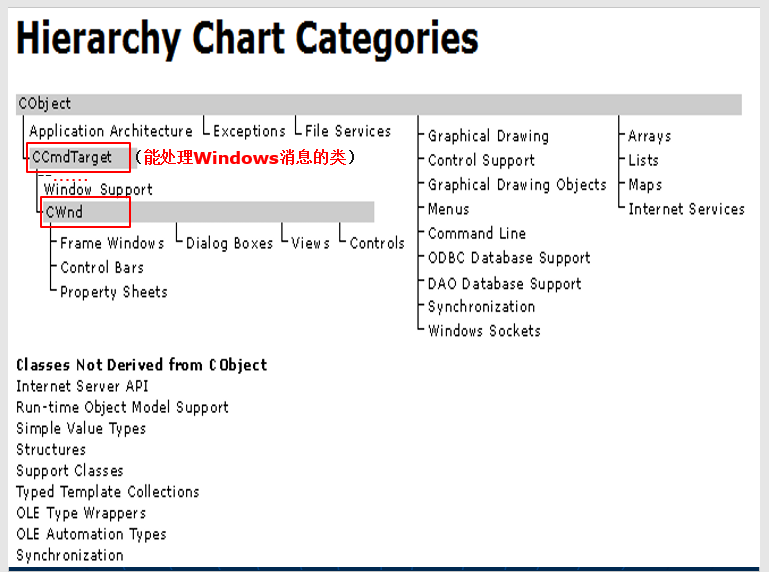
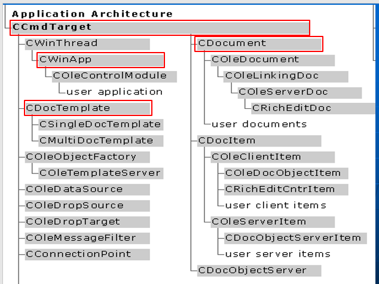
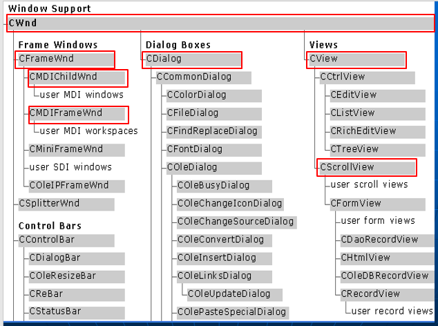
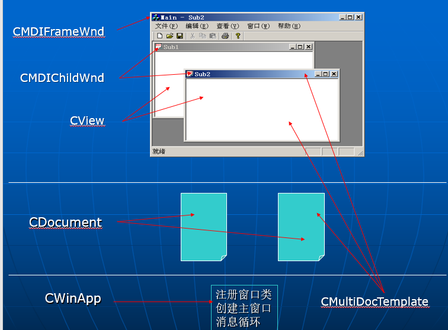
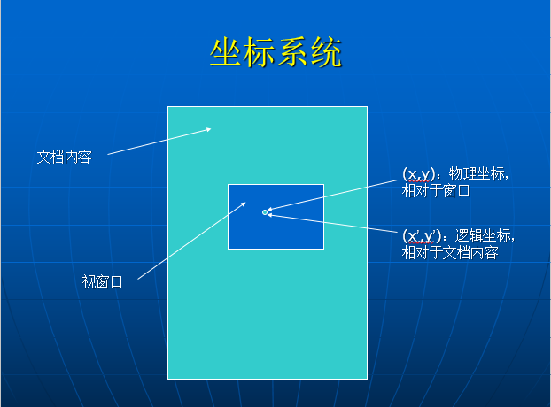

重点
Windows简介
消息驱动的程序结构
基于Windows API的过程式Window应用陈旭设计
基于MFC和”文档-视”结构的面向对象Windows应用程序设计
Windows简介
Window是一种基于图形界面的多任务操作系统
- 系统中可以同时运行多个应用程序
- 每个应用程序通过窗口与用户进行交互
- 用户通过鼠标的单击，双击，拖放，菜单选择以及键盘输入来进行操作
Windows功能以两种方式提供：
- 工具（应用程序）：资源管理器、记事本、画图，。。。直接使用
- 函数库: 作为Windows的API。
单文档应用
- 只能对一个文档的数据进行操作
- 只有结束当前文档的操作后，才能进行下一个文档的操作
多文档应用 - 可以同时对多个文档的数据进行操作
- 不必等到一个文档的所有操作结束，就可以对其它文档进行操作，对不同文档的操作是在不同的子窗口进行的
对话框应用 - 以对话框的形式操作一个文档数据
- 对文档数据的操作以各种control空间来实现
- 程序以按确定或取消等按钮来结束
Windows应用程序的结构属于消息（事件）驱动的结构：
程序的任何一个动作都是在接受到一条消息后发生的
Windows的消息有：
1 | WM_KEYDOWN/WM_KEYUP（键盘按键） |
每个Windows应用程序都有一个消息队列，Windows系统会把各个应用程序的消息放入各自的消息队列。
大部分的消息都关联到某个窗口
- 每个窗口都有一个消息处理函数
Windows应用程序不断从自己的消息队列中获取消息并调用相应窗口中的消息处理函数来处理获得的消息。
这个“取消息-处理消息”的过程构成了消息循环。
当取到某个特定消息后，消息循环结束。
主程序
1 | //初始化 |
消息处理函数：
注意：每个消息的处理时间不宜太长，否则会造成程序”假死”现象(程序不响应其它消息)
这个消息队列应该是最外面的队列吧，那么对于最里面的队列。每个队列都是这样做的吗？好奇！
基于Window API的过程式Windows应用程序设计
每个Windows应用程序都必须提供一个主函数WinMain，其主要功能是:
- 注册窗口类：窗口的基本信息：名字、基本风格、消息处理函数、图标、光标、背景颜色; 每类窗口都需要注册
- 创建应用程序的主窗口，其他窗口等需要时再创建
- 进入消息循环，直到接收到WM_QUIT消息后，消息循环结束。
程序还要为每类窗口提供一个消息处理函数，用于处理发送到它的消息。
1 | #include <windows.h> |
消息处理函数中还可以生成新的消息，方式有两种:
- PostMessage 消息放入消息队列
- SendMessage 直接调用消息处理函数
他们的参数为: HWND hWnd, UINT Msg, WPARAM wParam, LPARAM lParam. 消息参数1和2hWnd接收消息的窗口标识，应该是把窗口进行了分类的感觉吧。Msg实际也是将消息标识进行了分类
消息处理函数应是可再入的
由于消息处理在处理一条消息时可能会主动产生一些新消息，这些消息并不放入消息队列，而是直接调用消息处理函数来处理这些消息，遮掩，就有可能导致小夏处理函数的一次执行还未结束，另一次执行就开始的现象，这可能会引起数据的不一致错误。
这里消息的概念是平行的，假设每个消息可能对实际的函数产生不一样的结果。
因此，消息处理函数应该是一个可重入函数，即函数调用者要自带工作区（数据空间）：
- 函数需要的数据需要通过参数来传递
- 函数不能有static存储类的局部变量
- 在函数中访问全局变量也可能导致函数不可再入
实话说，不懂什么意思，函数需要自己调用吗？还是怎么的？
资源
每个Windows应用程序，除了程序代码外，还包含一些资源描述：
菜单：菜单ID, 菜单项ID/显示文字
对话框:对话框类型，尺寸与位置
资源描述有规定的格式，存储在相应的资源文件(.rc)中，经编译后将作为Windows应用程序的一部分被链接到应用程序的目标文件中。
资源可以用VC++的资源管理器来进行可视化编辑。
这里的资源也就对应着C++的内容
面向对象的Windows应用程序设计
基于Windows API的程序设计是一种基于过程抽象的程序设计范式。
通过调用API函数编写程序的粒度太细、太繁琐，开发效率不高。
如何以更大粒度的程序元素（如对象）来开发Windows应用程序？
- Microsoft的MFC类库提供了以面向对象范式进行应用程序开发的支持。
窗口对象
- 显示程序的处理数据
- 处理Windows的消息、实现与用户的交互
- 窗口对象之间可以存在聚集关系
文档对象
- 管理在各个窗口中显示和处理的数据
- 文档对象与窗口对象之间可以存在着一对多的关系
应用程序对象
- 管理属于它的窗口对象和文档对象
- 实现消息循环
- 与他的窗口对象及文档对象之间构成 聚集关系。
聚集关系实际上就是指窗口之间的互相联系。
理解：窗口对象主要是显示程序，窗口对象之间可以互相存在关系；文档对象即主要指的是每个窗口中的数据，可以考虑窗口中的数据。
窗口就是数据的显示层，而文档就是指的具体数据。应用程序对象就是main函数的感觉。
对Windows应用，应用程序对象和主窗口对象只有一个，子窗口对象和文档对象则可以有多个，它们在程序运行的不同时刻创建。
例如，对于一个多文档的Windows应用程序
- 在程序开始运行时，首先创建应用程序对象;
- 由应用程序对象来创建主窗口对象；
- 在程序运行过程中，用户选择主窗口菜单项”文档|打开”，创建一个稳定那个对象以及相应的子窗口对象。
也就是说文档对象其实是叶节点的感觉，是最底层的东西。
MFC Microsoft Foundation Class library
微软基础类库
MFC是微软公司提供的支持以面向对象范式进行Windows应用程序开发的一个基础类库
- MFC提供了一些类来描述应用中对象的基本功能，应用程序可以通过集成这些类来实现各自的特殊功能。
在这里，想起qt中，本身有Dialog, Frame等对象，实际上感觉也是如此的。
- MFC还提供了一种基于”文档-视”结构的应用框架。
所谓框架需要进行好好理解，所谓框架一般来说是指的在实际问题过程中不断向前发展。一般来说最好了解框架的历史。但是实际上如果一开始接触不到这个信息的话，只有先进行框架的原理和功能，以及如何使用等方面进行先理解。当理解明白后，直接使用。注意！不要迷信框架，最后把如何从很复杂的东西抽象到框架的过程理解明白。当然，第一步肯定是要会用框架。

由图可以看出，首先CObject分为了应用的框架Application Architecture, 异常Exceptions, 文件服务File Services, 基本类型Arrays, Lists, Maps, Internet Services, 以及Graphical Drawing, Control Support, Menus, ODBC Database Support, DAO Database Support, Synchronization, Windows Sockets等高级专题。
对于Application Architecture用可以分为CCmdTarget即能处理Windows消息的类，往下派生CWind,分为以下几类， Frame Windows, Control Bars, Property Sheets以及 Dialog Boxes 以及Views以及Controls等等。
还有一部分Class不是从CObject派生的，也就是说不是采用的面向对象范式。
Internet Server API, Run-time Object Model Support, Structures, Support Classes, Typed Template Collections, OLE Type Wrappers, OLE Automation Typesm Synchronization.

可以看出CCmdTarget被分为了好几类，CWinThread, CWinApp 线程的， CDocument文档的， CDocTemplate文档类型的。

MFC提供的主要类
- 窗口类
- 基本窗口类CWnd
- 实现窗口的基本功能:
一般的消息处理、窗口大小和位置管理、菜单管理、坐标系管理、滚动条管理、剪切板管理、窗口状态管理、窗口间位置关系管理，等等
是其他窗口类的基类
- 实现窗口的基本功能:
- 框架窗口类
- 提供对标题栏、菜单栏、工具栏、状态栏以及属于它的子窗口的管理功能。
- CFrameWnd: 提供了单文档应用主窗口的基本功能
- CMDIFrameWnd: 提供了多文档应用主窗口的基本功能
- CMDIChildWnd: 提供了多文档应用子窗口的基本功能
一个窗口中有多个CView,CMDIChildWnd和CMDIFrameWnd一定对应吗？
- 视类CView
- 实现程序数据的显示功能以及操作数据时与用户的交互功能
- 视窗口位于单文档应用主窗口CFrameWnd和多文档应用子窗口CMDIChildWnd的客户区（可显示区）
- 对话框类CDialog
- 对话框是一种特殊的窗口，用于获取用户的输入信息。
- 每个对话框都包含了一些对话框控件（如：按钮、列表框、单选/多选框等），这些控件属于对话框对象的成员对象。
- CDialog类封装了对话框的基本功能，它构成了所有对话框的基类。
- 基本窗口类CWnd
- 文档类CDocument
- 对程序要处理的数据进行管理，包括磁盘文件I/O.
- 一个CDocument类的对象至少要对应一个CView类的对象
这里也就是所谓的数据-展示的感觉
刚刚最开始自己的感觉就是应该是数据与文档对应
- 应用框架类
这里是怎么组织的，真让人好奇
- 文档模板类
- 实现对文档、视窗口和框架窗口所构成的对象组的管理功能。（用于支持基于“文档=视”结构的应用框架）
- CDocTemplate: 文档模板的基类
CView+CDocument
- CSingleDocTemplate: 单文档模板基类
- CMultiDocTemplate: 多文档模板类
这里跟自己的理解是一样的吗？它的意思是这里进行管理的功能？
- 应用类CWinApp
- 提供了对Windows应用程序的各部分进行组合和管理的功能，其中包括对主窗口和文档模板的管理以及实现消息循环等、
换言之，应用类调用文档模板类，实现消息循环。文档模板类实现对文档、视窗口、框架窗口所构成的对象组的管理。文档即数据，视窗口即文档的数据，框架窗口即整个菜单栏，状态栏以及其他的等等
- 提供了对Windows应用程序的各部分进行组合和管理的功能，其中包括对主窗口和文档模板的管理以及实现消息循环等、
- 文档模板类

- 绘图类
- 绘图环境类CDC
- 实现Windows应用程序中的绘图功能：文本以及几何图形（线、矩形、椭圆等）的输出
- 要关联一个窗口以及一些绘图工具
- 绘图工具类CPen, CFont, CBrush
- 实现笔、字体、刷子等绘图所需的绘图元素。
- 绘图环境类CDC
- 文件输入\输出类
- CFile类：实现了基于字节流的文件I/O
- CArchive类：通过重载操作符<<和>>实现了对基本数据类型和MFC类对象的文件I/O.
- 常用数据类型
- CPoint点坐标，CRect矩形信息，CSize矩形的宽度/高度，点之间的偏移量等
- 字符串类CString
文档-视结构
- 文档
- 用于存储和管理程序中的数据。
- 视
- 显示文档数据以及实现对文档数据进行操作时与用户的交互功能
- 文档与视一起可以实现：
- 数据的内部存储形式和数据的外部表现形式相互独立
- 一个文档对象对应一个或多个视对象，即，对于同一个文档数据可以用不同的方式进行显示和操作
MFC提供了一个基于“文档-视”结构的应用框架，主要由以下类构成：
- CView
- CDocument
- CFrameWnd
- CDocTemplate
- CWinApp
应用框架规定了各个组成部分之间的关系，它带来的好处是简化了程序的控制流程设计。
基于“文档-视”结构的多文档应用框架的控制逻辑
- 首先创建一个CWinApp类的应用对象，然后
- 调用CWinApp类的成员函数InitInstance类对应用对象进行初始化：
- 创建一个CMultiDocTemplate类的文档模板对象，并调用CWinApp类的成员函数AddDocTemplate把它加入到应用对象中。
- 创建一个CMDIFramWnd类的主框架窗口对象，并记录在应用对象的数据成员m_pMainWnd中。
- 调用CWinApp类的成员函数Run,进入消息循环。
也就是说CWinApp-> InitInstance; 类文档模板对象，主框架窗口对象。然后容纳其他的。最后就是进行消息循环，其实也是Run的一个封装。
- 调用CWinApp类的成员函数InitInstance类对应用对象进行初始化：
- 用户选择菜单项”文件|打开”后，调用CWinApp类的成员函数OnFileOpen:
- 显示打开文件对话框，让用户选择要打开的文件
- 根据文档模板创建三个对象：文档CDoument,子框架窗口CMDIChildWnd和视CView, 并建立起他们之间的关联。
- 调用CDocument对象的成员函数OnOpenDocument从磁盘文件读取数据:
- 创建一个CArchive类的对象。
- 以CArchive类的对象作为参数调用CDocument的成员函数Serialize从磁盘读入数据并存放在文档对象中。
- 调用对应CView对象的成员函数OnInitialUpdate通知相应的视进行数据显示，这时，CView类的成员函数OnUpdate将会被调用，它会向CView对象发送WM_PAINT消息
- CView对象收到WM_PAINT消息后将调用CView的成员函数OnDraw显示文档的数据
这里他们三者之间的联系未说明白。首先，前面已经说到了管理的是消息队列。现在就是当面对具体的消息(事件)时的动作，此时是如果选择文件/打开后，首先会建立CDoucent, CView, CMDIChildren. 然后，在想这里的子框架的作用是否是打开不断的目录。其次，这里的CView类的成员函数发送WM_PAINT，应该会等待CDocument的一个消息后才会启动OnDraw吧，感觉上是这样的
- CView对象(视)与CDocument对象(文档)之间的交互
- 通过CView对象的成员函数GetDocument可获得相应的文档对象
- 通过CDocument对象的成员函数GetFirstViewPosition和GetNextView可获得相应 的视(可以有多个)
- 修改文档数据后，可以通过CDocument对象的成员函数SetModifiedFlag设置修改标记为true,并调用CDocument对象的成员函数UpdateAllViews通知相应的视刷新显示
- 这时，CView对象的成员函数OnUpdate和OnDraw将会被调用。
理解： 等于那个动作会调度CView，CView然后是CDocument的父亲，通过这些就可以显示函数。
- 这时，CView对象的成员函数OnUpdate和OnDraw将会被调用。
- 用户选择菜单项“文件|保存”
- 调用CDocument对象的成员函数OnSaveDoucument把文档数据保存到磁盘中：
- 创建一个CArchive类的对象
- 以CArchive类的对象作为参数调用CDocument对象的成员函数Serialize把文档中的数据写入磁盘
- 调用CDocument对象的成员函数SetModifiedFlag设置修改标记为false.
- 调用CDocument对象的成员函数OnSaveDoucument把文档数据保存到磁盘中：
- 用户选择菜单项“文件|关闭”
- 调用CDocument对象的成员函数OnFileClose;
- 调用CDocument对象的成员函数IsModified判断文档是否被修改，如果被修改，提示用户保存数据，然后按菜单项”文件|保存”处理
- 调用CDocument对象的成员函数OnCloseDocument撤销相应的视和子框架窗口
- 撤销文档对象
- 调用CDocument对象的成员函数OnFileClose;
- 用户选择菜单项“文件|退出”或关闭主窗口：
- 向应用的主窗口（CMDIFrameWnd类的框架窗口）发送一条WM_CLOSE消息。
- 主窗口收到WM_CLOSE:
- 关闭所打开的文档（包括相应的视和子框架窗口）
- 撤销主窗口
- 向应用发送一条WM_QUIT消息
- 在CWinApp类的成员函数Run的消息循环中收到WM_QUIT消息后，
- 退出消息循环
- 调用CWinApp对象的成员函数ExitInstance做程序退出前的一些处理。
CView
1 | - CDocument *m_pDocument; |
不亏为抽象类的感觉
- CDocument
1
2
3
4
5
6
7
8
9
10
11
12
13
14
15
16
17
18
19
20
21
22
23
24
25
26
27- void AddView(CView *pView);
// 给文档对象增加一个关联的CView类的对象，双向注册的感觉？. 通过参数的形式组合，倒也很正常。 不过是有GetDocument来调用它
- void RemoveView(CView *pView);
// 使一个CView类的对象脱离于文档对象的关联
- virtual POSITION GetFirstViewPosition() const;
// 获取关联的第一个CView对象的位置
- virtual CView* GetNextView(POSITION& rPosition) const;
// 获取指定位置的CView对象，rPosition自动往后移动一个位置
- void UpdateAllViews(CView* pSender, LPARAM IHint=0L, CObject* pHint=NULL);
// 向关联的CView对象发送刷新消息。当pSender为NULL时，向关联的所有CView对象发送刷新消息。
> 怎么实现刷新？首先思考，这个刷新肯定是由某个动作触发的，那么把它加在其余的后面就可以了呗。对！
void SetModifiedFlag(BOOL bModified=TRUE);
设置文档修改标记。
BOOL IsModified( );
判断文档是否被修改。
virtual BOOL OnSaveDocument(LPCTSTR lpszPathName );
把文档中数据保存到文件名为lpszPathName 的文件中去。
virtual BOOL OnOpenDocument(LPCTSTR lpszPathName );
从文件名为lpszPathName 的文件中读取文档数据。
virtual BOOL OnNewDocument( );
对文档数据进行初始化。
virtual void OnCloseDocument( );
关闭文档。
virtual void Serialize( CArchive& ar );
用于文档数据的序列化（写入磁盘文件或从磁盘文件读出）。
一般由OnSaveDocument和OnOpenDocument来调用
1 | CArchive档案类 |
CDocTemplate文档模板类
1 | CDocTemplate类的构造函数（其参数为文档、视以及框架窗口的类信息）： |
CWinApp
1 | virtual BOOL InitInstance(); |
Application Wizard应用向导
- 要在程序中建立应用框架中各对象的创建和操作代码将是一件很麻烦的工作。
VC++提供了一个应用向导，基于MFC的多文档应用程序，会自动建立5个雷，并分别为这些类写了一些必要的代码:
CMyApp
CMainFrame
CChildFrame
CMyView
CMyDoc
在应用向导建立的应用程序中有一个CMyApp类的全局对象theApp,它将在WinMain执行之前创建。
为了体现”纯”面向对象特性，在应用向导建立的应用程序中隐藏了主函数WinMain. 在隐藏的WinMain中， - 首先调用theApp的成员函数InitInstance对应用程序进行初始化
- 然后去调用theApp的成员函数Run进入消息循环
消息循环结束之后，将会调用theApp的成员函数ExitInstance进行程序结束前的一些处理。
在应用向导建立的应用程序中对消息处理函数进行了结构化处理: - 通过消息映射机制把Windows消息与相应类的成员函数关联起来
- 各个消息的处理分别由相应类的一个成员函数来实现。
类向导
为应用程序中从MFC派生的类增加/删除成员
- 消息处理成员函数（菜单、窗口、键盘、鼠标）
- 基类中可重定义的成员函数
- 新定义数据成员（成员变量）
- 对话框类与各个“控件”所对应的数据成员
为应用程序增加/删除基于MFC的类
图形用户接口设计GUI
- 菜单
- 对话框
- 绘图
- 坐标变换
菜单
菜单是执行程序功能的一种手段。
- 一个程序可以有多个菜单，每个菜单都有一个标识。
- 菜单有菜单项构成，每个菜单项包含：
- 标识
- 显示文字和提示文字
- 处理函数
- 菜单的外观设计可以用资源编辑器来完成
- 菜单处理函数可以用类向导来添加。
对话框
对话框是一种窗口，它是Windows应用程序与用户进行交互的一种重要手段。
每个对话框都包含了一些对话框控件（如：按钮、编辑、列表、组合等），这些控件属于对话框对象的成员对象（子窗口）
子窗口这个概念原来等效于成员对象啊？
一个对话框往往需要对应一个对话框模板
- 每个对话框模板都有一个标识
- 对话框模板描述了对话框的组成，包括：对话框的标识和尺寸；对话框中各个控件的标识、类型、尺寸与位置等
- 对话框模板可用资源编辑器来设计
哪些东西是可以机器化的呢？比如说，这里利用机器，UI来设计，其实就是应用了这里的东西的感觉。其实莫过于最奇妙的东西就是，消息的发送和传递。谁是参数？在注册的时候需要些什么东西？
每个对话框都对应着一个对话框类，它可以用类向导来管理：
- 为对话框控件指定消息处理函数
- 为对话框指定成员变量
CDialog对话框类
程序中需要打开对话框时，首先要创建一个对话框类的对象，然后调用该类的成员函数DoMadal.如:
1 | CMyDlg dlg; // 创建一个对话框类的对象dlg. |
公共的对话框类
- CFileDialog: 文件打开/保存对话框
- CFontDialog: 字体选择对话框
- CColorDialog: 颜色选择对话框
- CPrintDialog: 打印设置对话框
- CFindReplaceDialog: 查找/替换对话框
绘图–CDC类
设备环境类CDC用于实现Windows应用程序中的绘图功能。
进行绘图时，首先要创建一个CDC类或其派生类的对象，该对象将包含绘图时所需要的各种元素，包括:
- 绘图函数，如：输出文字、画线、画矩形、画椭圆等
- 绘图工具，如：字体、颜色、笔、刷子等
在创建CDC类或其派生类的对象时需要指出它所对应的窗口对象，绘图操作将在相应窗口中进行。
应用框架在调用CView的OnDraw成员函数时，会自动创建一个CDC类的对象，作为参数传给OnDraw.
1 | 文本输出函数 |
绘图工具
- 画笔（用于画线）
- 构造函数的参数为笔型、笔宽以及颜色
CPen(int nPenStyle, int nWidth, COLORREF crColor);
- 构造函数的参数为笔型、笔宽以及颜色
- 刷子（用于填充封闭图形）
- 构造函数的参数为刷子的颜色
CBrush(COLORREF crColor);
- 构造函数的参数为刷子的颜色
- 字体
- 先创建一个默认构造的CFont类的对象，然后调用该类的CreatePointFont成员函数完成字体的构造
CFont();bool CFont::CreatePointFont(int nPointSize, LPCTSTR lpszFaceName, CDC* pDC=NULL);
- 先创建一个默认构造的CFont类的对象，然后调用该类的CreatePointFont成员函数完成字体的构造
1 | void CMyView::OnDraw(CDC* pDC) |
CView的一些派生类
- CScrollView(带滚动功能的视)
- CEditView(具有编辑功能的视)
- CFormView(具有表格功能的视)
- CHtmlView(具有Web浏览功能的视)
坐标转换
CScrollView
1 | void CScrollView::SetScrollSizes( |

坐标转换函数
OnPrepareDC(&dc,NULL);
为ScrollView初始化dc
dc.DPtoLP(&point);
从物理坐标转换到逻辑坐标
dc.LPtoDP(&point);
从逻辑坐标转换到物理坐标
1 | void CStudentsView::OnLButtonDown(UINT nFlags, |
一点反思
学习的几个过程
- 首先，如果课件足够好，也可以不用记笔记，这样的效率高，但是能够记住吗？但是感觉上最有用的可能就是反思吧？也就是说并不意味着一定要记很多笔记。
记住，衡量的标准一直是上课预估后面不会做的易错点，还有精华的地方自己是否掌握了，这才是最重要的。
按照以前的学习态度，如果是自己在乎的知识。
首先，第一次一定要要么有好的课本，或者材料特别好。
看书，并且记自己不懂的地方。
第一次看书下来，主要讲什么的大体的脉络要清晰。
然后还要衡量所花的时间等诸多因素。
然后，再将笔记进一步总结。练过所有需要练习的局部知识点，然后开始自己。
学习知识点还有几遍，然后就是大量地做题，直到做到彻底掌握这个知识点为止。
最后，如果时间充裕再看其他知识点进行迁移，弄明白整个过程。